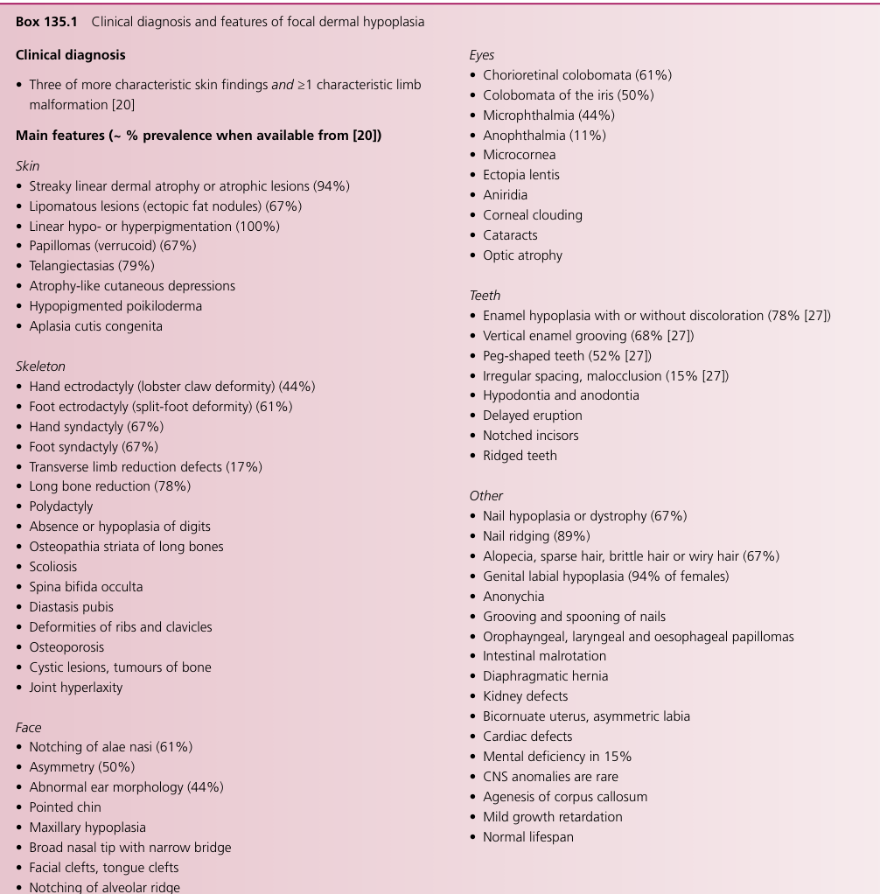

Focal dermal hypoplasia (FDH; Goltz syndrome, Goltz-Gorlin syndrome) is an X-linked dominant, generally male-lethal mesoectodermal dysplasia caused by loss-of-function variants in PORCN, a membrane-bound O-acyltransferase that palmitoleoylates WNT ligands in the endoplasmic reticulum. The lipid modification is required for WNT binding to the cargo receptor WLS and for WNT secretion; PORCN deficiency therefore reduces extracellular WNT signaling during embryogenesis. The result is a highly variable multisystem disorder of tissues of ectodermal and mesodermal origin, with characteristic linear cutaneous atrophy/aplasia and fat herniation distributed along the lines of Blaschko, limb reduction defects (split hand/foot, syndactyly, oligodactyly), ocular, dental, skeletal, and visceral anomalies. Most affected individuals are female; live-born affected males are typically mosaic for a de novo PORCN variant.
Ask a research question about Focal Dermal Hypoplasia. OpenScientist will conduct autonomous deep research using the Disorder Mechanisms Knowledge Base and PubMed literature (typically 10-30 minutes).
Do not include personal health information in your question. Questions and results are cached in your browser's local storage.
name: Focal Dermal Hypoplasia
creation_date: "2026-06-03T00:00:00Z"
category: Mendelian
disease_term:
preferred_term: Focal dermal hypoplasia
term:
id: MONDO:0010592
label: focal dermal hypoplasia
description: >
Focal dermal hypoplasia (FDH; Goltz syndrome, Goltz-Gorlin syndrome) is an
X-linked dominant, generally male-lethal mesoectodermal dysplasia caused by
loss-of-function variants in PORCN, a membrane-bound O-acyltransferase that
palmitoleoylates WNT ligands in the endoplasmic reticulum. The lipid
modification is required for WNT binding to the cargo receptor WLS and for WNT
secretion; PORCN deficiency therefore reduces extracellular WNT signaling
during embryogenesis. The result is a highly variable multisystem disorder of
tissues of ectodermal and mesodermal origin, with characteristic linear
cutaneous atrophy/aplasia and fat herniation distributed along the lines of
Blaschko, limb reduction defects (split hand/foot, syndactyly, oligodactyly),
ocular, dental, skeletal, and visceral anomalies. Most affected individuals
are female; live-born affected males are typically mosaic for a de novo PORCN
variant.
synonyms:
- Goltz syndrome
- Goltz-Gorlin syndrome
- focal dermal hypoplasia, X-linked dominant
parents:
- hereditary disease
- developmental defect during embryogenesis
references:
- reference: PMID:20301712
title: "PORCN-Related Developmental Disorders."
tags:
- GeneReviews
- reference: PMID:21768372
title: "Deletion of mouse Porcn blocks Wnt ligand secretion and reveals an ectodermal etiology of human focal dermal hypoplasia/Goltz syndrome."
- reference: PMID:22412863
title: "Deletion of Porcn in mice leads to multiple developmental defects and models human focal dermal hypoplasia (Goltz syndrome)."
- reference: PMID:35101074
title: "Novel insights into PORCN mutations, associated phenotypes and pathophysiological aspects."
- reference: PMID:37859990
title: "Case report: papillary thyroid carcinoma in Goltz-Gorlin syndrome."
- reference: PMID:41039413
title: "Treatment of a case with short stature and Goltz syndrome with long-acting growth hormone: a case report and follow-up."
pathophysiology:
- name: PORCN Loss Impairs WNT Palmitoleoylation and Secretion
description: >
PORCN encodes a membrane-bound O-acyltransferase resident in the
endoplasmic reticulum that attaches a monounsaturated fatty acid
(palmitoleic acid) to a conserved serine residue of WNT ligands. This
lipid modification is required for WNT engagement of the WLS/Wntless cargo
receptor and for export of WNT from the ER to the cell surface.
Loss-of-function PORCN variants abolish WNT acylation, trapping WNT in the
ER and reducing extracellular WNT signaling. Because WNT signaling governs
proliferation, patterning, and differentiation of ectodermal and
mesodermal derivatives during embryogenesis, PORCN deficiency produces the
multisystem mesoectodermal phenotype of FDH.
cell_types:
- preferred_term: fibroblast
term:
id: CL:0000057
label: fibroblast
biological_processes:
- preferred_term: protein palmitoleoylation
term:
id: GO:0018345
label: protein palmitoylation
modifier: DECREASED
- preferred_term: WNT protein secretion
term:
id: GO:0061355
label: Wnt protein secretion
modifier: DECREASED
- preferred_term: canonical Wnt signaling
term:
id: GO:0060070
label: canonical Wnt signaling pathway
modifier: DECREASED
evidence:
- reference: PMID:17141155
reference_title: "Monounsaturated fatty acid modification of Wnt protein: its role in Wnt secretion."
supports: SUPPORT
evidence_source: IN_VITRO
snippet: "Wnt-3a defective in acylation at Ser209 is not secreted from cells in culture or in Xenopus embryos, but it is retained in the endoplasmic reticulum (ER). Furthermore, Porcupine, a protein with structural similarities to membrane-bound O-acyltransferases, is required for Ser209-dependent acylation"
explanation: >
Demonstrates the core molecular mechanism: Porcupine acylates Wnt at a
conserved serine residue, and this acylation is required for Wnt
secretion from the ER. Loss of PORCN function therefore blocks Wnt
secretion.
- reference: PMID:17546031
reference_title: "Deficiency of PORCN, a regulator of Wnt signaling, is associated with focal dermal hypoplasia."
supports: SUPPORT
evidence_source: HUMAN_CLINICAL
snippet: "we identified PORCN, encoding a putative O-acyltransferase and potentially crucial for cellular export of Wnt signaling proteins, as the gene mutated in FDH. The findings implicate FDH as a developmental disorder caused by a deficiency in PORCN."
explanation: >
Establishes that PORCN deficiency, affecting an O-acyltransferase
crucial for cellular export of Wnt proteins, is the cause of FDH.
- reference: PMID:17546030
reference_title: "Mutations in X-linked PORCN, a putative regulator of Wnt signaling, cause focal dermal hypoplasia."
supports: SUPPORT
evidence_source: HUMAN_CLINICAL
snippet: "PORCN encodes the human homolog of Drosophila melanogaster porcupine, an endoplasmic reticulum protein involved in secretion of Wnt proteins."
explanation: >
Independent identification of PORCN mutations in FDH and confirmation
that PORCN functions in ER-localized secretion of Wnt proteins.
- reference: PMID:22412863
reference_title: "Deletion of Porcn in mice leads to multiple developmental defects and models human focal dermal hypoplasia (Goltz syndrome)."
supports: SUPPORT
evidence_source: IN_VITRO
snippet: "cell-based assays confirm that human PORCN mutations reduce WNT3A secretion."
explanation: >
Cell-based assays directly demonstrate that human PORCN mutations reduce
WNT3A secretion, confirming the loss-of-function mechanism at the level
of WNT export.
- reference: PMID:35101074
reference_title: "Novel insights into PORCN mutations, associated phenotypes and pathophysiological aspects."
supports: SUPPORT
evidence_source: IN_VITRO
snippet: "provide novel insights into the molecular etiology of GS by adding impaired ER-function and altered protein secretion to the list of pathophysiological processes resulting in the clinical manifestation of GS."
explanation: >
Patient-fibroblast functional studies add impaired ER function and
altered protein secretion to the pathophysiology of PORCN deficiency,
extending the secretion defect beyond WNT ligands themselves.
downstream:
- target: Impaired Mesoectodermal Development
causal_link_type: INDIRECT_KNOWN_INTERMEDIATES
description: >
Reduced WNT secretion and signaling impairs WNT-dependent development of
ectodermal and mesodermal tissue derivatives.
- name: X-Linked Dominant Inheritance with Male Lethality and Mosaicism
description: >
FDH is inherited in an X-linked dominant manner. Most affected individuals
are heterozygous females (~90%); non-mosaic hemizygous males are presumed
non-viable, so most live-born affected males (~10%) are mosaic for a de
novo PORCN variant. In affected females, random X-chromosome inactivation
(lyonization) produces a functional mosaic of PORCN-expressing and
PORCN-deficient cells, which underlies the patchy, segmental distribution
of lesions along the lines of Blaschko.
cell_types:
- preferred_term: fibroblast
term:
id: CL:0000057
label: fibroblast
evidence:
- reference: PMID:20301712
reference_title: "PORCN-Related Developmental Disorders."
supports: SUPPORT
evidence_source: HUMAN_CLINICAL
snippet: "Females (90% of affected individuals) are heterozygous or mosaic for a PORCN pathogenic variant; most live-born affected males (10% of affected individuals) are mosaic for a de novo PORCN pathogenic variant. It is presumed that most non-mosaic hemizygous males are not viable."
explanation: >
Documents the X-linked dominant inheritance with presumed male lethality
and the predominance of mosaicism in affected males.
- reference: PMID:19586929
reference_title: "Phenotype and genotype in 17 patients with Goltz-Gorlin syndrome."
supports: SUPPORT
evidence_source: HUMAN_CLINICAL
snippet: "The male patient had classical features and showed mosaicism for a PORCN nonsense mutation in fibroblasts."
explanation: >
Confirms that an affected male carried the PORCN variant in a mosaic
state, consistent with lethality of non-mosaic hemizygous variants.
- reference: PMID:21768372
reference_title: "Deletion of mouse Porcn blocks Wnt ligand secretion and reveals an ectodermal etiology of human focal dermal hypoplasia/Goltz syndrome."
supports: SUPPORT
evidence_source: MODEL_ORGANISM
snippet: "Consistent with the female-specific inheritance pattern of FDH, Porcn hemizygous male embryos arrest during early embryogenesis and fail to generate mesoderm, a phenotype previously associated with loss of Wnt activity."
explanation: >
The mouse model recapitulates the male lethality of FDH: hemizygous male
embryos arrest in early embryogenesis and fail to generate mesoderm,
providing a mechanistic basis for the presumed non-viability of
non-mosaic hemizygous males.
downstream:
- target: Impaired Mesoectodermal Development
causal_link_type: INDIRECT_KNOWN_INTERMEDIATES
description: >
Functional X-chromosome mosaicism produces a patchwork of
PORCN-deficient cell clones, giving the mesoectodermal lesions their
characteristic segmental distribution along the lines of Blaschko.
- name: Impaired Mesoectodermal Development
description: >
Reduced WNT signaling during embryogenesis disrupts the development of
tissues of both ectodermal and mesodermal origin, producing the
pleiotropic FDH phenotype: defective dermal connective tissue with
herniation of subcutaneous fat, limb reduction defects, and abnormalities
of eyes, teeth, nails, hair, and skeletal and visceral structures.
cell_types:
- preferred_term: fibroblast
term:
id: CL:0000057
label: fibroblast
- preferred_term: keratinocyte
term:
id: CL:0000312
label: keratinocyte
evidence:
- reference: PMID:17546031
reference_title: "Deficiency of PORCN, a regulator of Wnt signaling, is associated with focal dermal hypoplasia."
supports: SUPPORT
evidence_source: HUMAN_CLINICAL
snippet: "Focal dermal hypoplasia (FDH) is an X-linked dominant multisystem birth defect affecting tissues of ectodermal and mesodermal origin."
explanation: >
Establishes FDH as a developmental disorder affecting both ectodermal
and mesodermal tissue derivatives, consistent with a WNT-signaling
patterning defect.
- reference: PMID:21768372
reference_title: "Deletion of mouse Porcn blocks Wnt ligand secretion and reveals an ectodermal etiology of human focal dermal hypoplasia/Goltz syndrome."
supports: SUPPORT
evidence_source: MODEL_ORGANISM
snippet: "Heterozygous Porcn mutant females exhibit a spectrum of limb, skin, and body patterning abnormalities resembling those observed in human patients with FDH. Many of these defects are recapitulated by ectoderm-specific deletion of Porcn"
explanation: >
Conditional Porcn deletion in mice recapitulates the limb, skin, and
body-patterning defects of human FDH, confirming that reduced WNT
signaling in mesoectodermal lineages drives the multisystem phenotype.
- reference: PMID:22412863
reference_title: "Deletion of Porcn in mice leads to multiple developmental defects and models human focal dermal hypoplasia (Goltz syndrome)."
supports: SUPPORT
evidence_source: MODEL_ORGANISM
snippet: "Mesenchyme-specific Prx-Cre-driven inactivation of Porcn produces FDH-like limb defects, while ectodermal Krt14-Cre-driven inactivation produces thin skin, alopecia, and abnormal dentition."
explanation: >
Lineage-specific Porcn inactivation in mice maps FDH limb defects to
mesenchymal cells and skin/hair/tooth defects to ectoderm, demonstrating
that defective WNT signaling in distinct mesoectodermal lineages produces
the corresponding human manifestations.
phenotypes:
- name: Focal Dermal Hypoplasia
category: Cutaneous
description: >
Atrophic and hypoplastic areas of skin present at birth, characteristically
distributed in a linear pattern along the lines of Blaschko, reflecting
functional X-chromosome mosaicism.
phenotype_term:
preferred_term: Aplasia/Hypoplasia of the skin
term:
id: HP:0008065
label: Aplasia/Hypoplasia of the skin
evidence:
- reference: PMID:20301712
reference_title: "PORCN-Related Developmental Disorders."
supports: SUPPORT
evidence_source: HUMAN_CLINICAL
snippet: "Skin manifestations present at birth include atrophic and hypoplastic areas of skin; cutis aplasia; fat nodules in the dermis manifesting as soft, yellow-pink cutaneous nodules; and pigmentary changes."
explanation: >
GeneReviews documents atrophic and hypoplastic skin areas as a defining
cutaneous manifestation of FDH.
- name: Aplasia Cutis Congenita
category: Cutaneous
description: >
Congenital absence of skin (cutis aplasia) in affected areas.
phenotype_term:
preferred_term: Aplasia cutis congenita
term:
id: HP:0001057
label: Aplasia cutis congenita
evidence:
- reference: PMID:20301712
reference_title: "PORCN-Related Developmental Disorders."
supports: SUPPORT
evidence_source: HUMAN_CLINICAL
snippet: "Skin manifestations present at birth include atrophic and hypoplastic areas of skin; cutis aplasia"
explanation: >
GeneReviews lists cutis aplasia among the birth skin manifestations.
- name: Pigmentary Changes
category: Cutaneous
description: >
Linear hypo- and hyperpigmentation distributed along the lines of Blaschko,
present at birth and reflecting functional X-chromosome mosaicism. This is
among the most frequent cutaneous manifestations of FDH.
phenotype_term:
preferred_term: Linear hypo- and hyperpigmentation along the lines of Blaschko
term:
id: HP:0001000
label: Abnormality of skin pigmentation
evidence:
- reference: PMID:20301712
reference_title: "PORCN-Related Developmental Disorders."
supports: SUPPORT
evidence_source: HUMAN_CLINICAL
snippet: "and pigmentary changes"
explanation: >
GeneReviews lists pigmentary changes among the cutaneous manifestations
present at birth in FDH.
- name: Dermal Fat Herniation
category: Cutaneous
description: >
Herniation of subcutaneous fat through the thinned/hypoplastic dermis,
producing soft, yellow-pink cutaneous nodules (fat nodules in the dermis).
The fat is present but mislocalized rather than reduced; there is no HPO
term that precisely captures dermal fat herniation, so the broad
"Abnormal adipose tissue morphology" term is used pending a New Term
Request (NTR) for this hallmark FDH lesion.
phenotype_term:
preferred_term: Herniation of subcutaneous fat through the dermis
term:
id: HP:0009124
label: Abnormal adipose tissue morphology
evidence:
- reference: PMID:20301712
reference_title: "PORCN-Related Developmental Disorders."
supports: SUPPORT
evidence_source: HUMAN_CLINICAL
snippet: "fat nodules in the dermis manifesting as soft, yellow-pink cutaneous nodules"
explanation: >
GeneReviews describes dermal fat nodules, reflecting herniation of
subcutaneous fat through the hypoplastic dermis, a hallmark of FDH.
- name: Cutaneous and Mucosal Papillomas
category: Cutaneous
description: >
Verrucous papillomas of the skin and mucous membranes that may appear later
in life, including at periorificial and laryngeal/esophageal sites.
phenotype_term:
preferred_term: Papilloma
term:
id: HP:0012740
label: Papilloma
evidence:
- reference: PMID:20301712
reference_title: "PORCN-Related Developmental Disorders."
supports: SUPPORT
evidence_source: HUMAN_CLINICAL
snippet: "Verrucous papillomas of the skin and mucous membranes may appear later."
explanation: >
GeneReviews documents verrucous papillomas of skin and mucous membranes
as a characteristic later-appearing manifestation.
- name: Nail Abnormalities
category: Cutaneous
description: >
Nails may be ridged, dysplastic, or hypoplastic.
phenotype_term:
preferred_term: Abnormal nail morphology
term:
id: HP:0001597
label: Abnormal nail morphology
evidence:
- reference: PMID:20301712
reference_title: "PORCN-Related Developmental Disorders."
supports: SUPPORT
evidence_source: HUMAN_CLINICAL
snippet: "The nails can be ridged, dysplastic, or hypoplastic"
explanation: >
GeneReviews documents nail dysplasia as part of the ectodermal phenotype.
- name: Sparse or Absent Hair
category: Cutaneous
description: >
Hair can be sparse or absent.
phenotype_term:
preferred_term: Sparse hair
term:
id: HP:0008070
label: Sparse hair
evidence:
- reference: PMID:20301712
reference_title: "PORCN-Related Developmental Disorders."
supports: SUPPORT
evidence_source: HUMAN_CLINICAL
snippet: "hair can be sparse or absent"
explanation: >
GeneReviews documents sparse or absent hair as part of the ectodermal
phenotype.
- name: Split Hand/Foot Malformation
category: Skeletal
description: >
Limb reduction defects including split hand/foot (ectrodactyly), a
characteristic FDH limb malformation.
phenotype_term:
preferred_term: Split hand
term:
id: HP:0001171
label: Split hand
evidence:
- reference: PMID:20301712
reference_title: "PORCN-Related Developmental Disorders."
supports: SUPPORT
evidence_source: HUMAN_CLINICAL
snippet: "Limb malformations include oligo- and syndactyly and split hand/foot."
explanation: >
GeneReviews documents split hand/foot as a characteristic limb
malformation in FDH.
- name: Syndactyly
category: Skeletal
description: >
Fusion of digits (syndactyly), part of the spectrum of FDH limb
malformations.
phenotype_term:
preferred_term: Syndactyly
term:
id: HP:0001159
label: Syndactyly
evidence:
- reference: PMID:20301712
reference_title: "PORCN-Related Developmental Disorders."
supports: SUPPORT
evidence_source: HUMAN_CLINICAL
snippet: "Limb malformations include oligo- and syndactyly and split hand/foot."
explanation: >
GeneReviews documents syndactyly among FDH limb malformations.
- name: Oligodactyly
category: Skeletal
description: >
Reduced number of digits (oligodactyly), part of the FDH limb reduction
spectrum.
phenotype_term:
preferred_term: Oligodactyly
term:
id: HP:0009380
label: Finger aplasia
evidence:
- reference: PMID:20301712
reference_title: "PORCN-Related Developmental Disorders."
supports: SUPPORT
evidence_source: HUMAN_CLINICAL
snippet: "Limb malformations include oligo- and syndactyly and split hand/foot."
explanation: >
GeneReviews documents oligodactyly among FDH limb malformations.
- name: Microphthalmia/Anophthalmia
category: HEENT
description: >
Developmental eye abnormalities including microphthalmia and anophthalmia.
phenotype_term:
preferred_term: Microphthalmia
term:
id: HP:0000568
label: Microphthalmia
evidence:
- reference: PMID:20301712
reference_title: "PORCN-Related Developmental Disorders."
supports: SUPPORT
evidence_source: HUMAN_CLINICAL
snippet: "Developmental abnormalities of the eye can include anophthalmia/microphthalmia, iris and chorioretinal coloboma, and lacrimal duct abnormalities."
explanation: >
GeneReviews documents microphthalmia/anophthalmia as a developmental eye
anomaly in FDH.
- name: Ocular Coloboma
category: HEENT
description: >
Iris and chorioretinal coloboma.
phenotype_term:
preferred_term: Coloboma
term:
id: HP:0000589
label: Coloboma
evidence:
- reference: PMID:20301712
reference_title: "PORCN-Related Developmental Disorders."
supports: SUPPORT
evidence_source: HUMAN_CLINICAL
snippet: "iris and chorioretinal coloboma"
explanation: >
GeneReviews documents iris and chorioretinal coloboma among the ocular
anomalies of FDH.
- name: Lacrimal Duct Anomalies
category: HEENT
description: >
Abnormalities of the lacrimal drainage system.
phenotype_term:
preferred_term: Lacrimal duct anomaly
term:
id: HP:0000564
label: Lacrimal duct atresia
evidence:
- reference: PMID:20301712
reference_title: "PORCN-Related Developmental Disorders."
supports: SUPPORT
evidence_source: HUMAN_CLINICAL
snippet: "lacrimal duct abnormalities"
explanation: >
GeneReviews documents lacrimal duct abnormalities among the ocular
findings of FDH.
- name: Dental Anomalies
category: HEENT
description: >
Dental anomalies including hypodontia, enamel defects, and/or abnormally
shaped teeth.
phenotype_term:
preferred_term: Hypodontia
term:
id: HP:0000668
label: Hypodontia
evidence:
- reference: PMID:20301712
reference_title: "PORCN-Related Developmental Disorders."
supports: SUPPORT
evidence_source: HUMAN_CLINICAL
snippet: "Dental anomalies can include hypodontia, enamel defects, and/or abnormally shaped teeth."
explanation: >
GeneReviews documents hypodontia, enamel defects, and abnormal tooth
shape as dental manifestations of FDH.
- name: Enamel Hypoplasia
category: HEENT
description: >
Defective dental enamel.
phenotype_term:
preferred_term: Enamel hypoplasia
term:
id: HP:0006297
label: Enamel hypoplasia
evidence:
- reference: PMID:20301712
reference_title: "PORCN-Related Developmental Disorders."
supports: SUPPORT
evidence_source: HUMAN_CLINICAL
snippet: "Dental anomalies can include hypodontia, enamel defects, and/or abnormally shaped teeth."
explanation: >
GeneReviews documents enamel defects as a dental manifestation of FDH.
- name: Cleft Lip and/or Palate
category: HEENT
description: >
Craniofacial findings can include cleft lip and palate.
phenotype_term:
preferred_term: Cleft lip and palate
term:
id: HP:0000202
label: Orofacial cleft
evidence:
- reference: PMID:20301712
reference_title: "PORCN-Related Developmental Disorders."
supports: SUPPORT
evidence_source: HUMAN_CLINICAL
snippet: "Craniofacial findings can include facial asymmetry, notched alae nasi, cleft lip and palate, pointed chin, and small, underfolded pinnae."
explanation: >
GeneReviews documents cleft lip and palate among craniofacial findings.
- name: Facial Asymmetry
category: HEENT
description: >
Facial asymmetry, a recognizable craniofacial feature of FDH, often
accompanied by other dysmorphic findings such as notched alae nasi,
pointed chin, and small, underfolded pinnae.
phenotype_term:
preferred_term: Facial asymmetry
term:
id: HP:0000324
label: Facial asymmetry
evidence:
- reference: PMID:20301712
reference_title: "PORCN-Related Developmental Disorders."
supports: SUPPORT
evidence_source: HUMAN_CLINICAL
snippet: "Craniofacial findings can include facial asymmetry, notched alae nasi, cleft lip and palate, pointed chin, and small, underfolded pinnae."
explanation: >
GeneReviews documents facial asymmetry among the craniofacial findings
of FDH.
- name: Hearing Impairment
category: HEENT
description: >
Hearing loss occurs in the FDH spectrum; GeneReviews recommends annual
hearing evaluation and provision of hearing aids and community hearing
services as needed.
phenotype_term:
preferred_term: Hearing impairment
term:
id: HP:0000365
label: Hearing impairment
evidence:
- reference: PMID:20301712
reference_title: "PORCN-Related Developmental Disorders."
supports: SUPPORT
evidence_source: HUMAN_CLINICAL
snippet: "annual hearing evaluation or as needed"
explanation: >
GeneReviews recommends annual hearing evaluation in FDH, reflecting
hearing impairment as a recognized manifestation warranting surveillance.
- name: Abdominal Wall Defects
category: Gastrointestinal
description: >
Occasional abdominal wall defects, sometimes severe (resembling pentalogy
of Cantrell or limb-body wall complex in severely affected fetuses).
phenotype_term:
preferred_term: Abdominal wall defect
term:
id: HP:0010866
label: Abdominal wall defect
evidence:
- reference: PMID:20301712
reference_title: "PORCN-Related Developmental Disorders."
supports: SUPPORT
evidence_source: HUMAN_CLINICAL
snippet: "Occasional findings include abdominal wall defects, diaphragmatic hernia, and kidney anomalies."
explanation: >
GeneReviews documents abdominal wall defects as an occasional finding
in FDH.
- name: Microdontia
category: HEENT
description: >
Abnormally small teeth, part of the spectrum of dental anomalies in FDH.
phenotype_term:
preferred_term: Microdontia
term:
id: HP:0000691
label: Microdontia
evidence:
- reference: PMID:20301712
reference_title: "PORCN-Related Developmental Disorders."
supports: SUPPORT
evidence_source: HUMAN_CLINICAL
snippet: "Dental anomalies can include hypodontia, enamel defects, and/or abnormally shaped teeth."
explanation: >
GeneReviews documents abnormally shaped/sized teeth among the dental
anomalies of FDH; microdontia is a recurrent specific finding.
- name: Supernumerary Nipple
category: Cutaneous
description: >
Accessory (supernumerary) or hypoplastic nipples are a recognized
ectodermal feature of Goltz syndrome.
phenotype_term:
preferred_term: Supernumerary nipple
term:
id: HP:0002558
label: Supernumerary nipple
evidence:
- reference: PMID:35101074
reference_title: "Novel insights into PORCN mutations, associated phenotypes and pathophysiological aspects."
supports: SUPPORT
evidence_source: HUMAN_CLINICAL
snippet: "Features include striated skin-pigmentation, ocular and skeletal malformations and supernumerary or hypoplastic nipples."
explanation: >
Documents supernumerary or hypoplastic nipples among the defining
ectodermal features of Goltz syndrome.
- name: Scoliosis
category: Skeletal
description: >
Lateral curvature of the spine, a skeletal manifestation of FDH that
warrants surveillance, particularly with costovertebral segmentation
abnormalities.
phenotype_term:
preferred_term: Scoliosis
term:
id: HP:0002650
label: Scoliosis
evidence:
- reference: PMID:20301712
reference_title: "PORCN-Related Developmental Disorders."
supports: SUPPORT
evidence_source: HUMAN_CLINICAL
snippet: "annual physical examination for scoliosis, particularly in individuals with costovertebral segmentation abnormalities"
explanation: >
GeneReviews recommends annual scoliosis surveillance in FDH, reflecting
scoliosis as a recognized skeletal manifestation.
- name: Short Stature
category: Constitutional
description: >
Reduced stature, which in some individuals is associated with growth
hormone deficiency.
phenotype_term:
preferred_term: Short stature
term:
id: HP:0004322
label: Short stature
evidence:
- reference: PMID:41039413
reference_title: "Treatment of a case with short stature and Goltz syndrome with long-acting growth hormone: a case report and follow-up."
supports: SUPPORT
evidence_source: HUMAN_CLINICAL
snippet: "This study reports a case with extensive skin dysplasia, limb malformations, and short stature."
explanation: >
Documents short stature in a genetically confirmed Goltz syndrome
patient, in this case associated with growth hormone deficiency.
- name: Developmental Delay
category: Neurologic
description: >
Most individuals have normal cognition, but developmental delay and other
CNS findings (microcephaly, epilepsy) occur in a minority.
phenotype_term:
preferred_term: Global developmental delay
term:
id: HP:0001263
label: Global developmental delay
evidence:
- reference: PMID:35101074
reference_title: "Novel insights into PORCN mutations, associated phenotypes and pathophysiological aspects."
supports: SUPPORT
evidence_source: HUMAN_CLINICAL
snippet: "one girl suffering from typical skin and skeletal abnormalities, developmental delay, microcephaly, thin corpus callosum, periventricular gliosis and drug-resistant epilepsy"
explanation: >
Documents developmental delay with additional CNS features in a
PORCN-confirmed Goltz syndrome patient, supporting CNS vulnerability as
part of the phenotypic spectrum.
- name: Papillary Thyroid Carcinoma
category: Neoplastic
description: >
Papillary thyroid carcinoma reported in an adolescent with genetically
confirmed FDH; a possible PORCN/WNT-related tumor susceptibility has been
hypothesized but not established.
phenotype_term:
preferred_term: Papillary thyroid carcinoma
term:
id: HP:0002895
label: Papillary thyroid carcinoma
evidence:
- reference: PMID:37859990
reference_title: "Case report: papillary thyroid carcinoma in Goltz-Gorlin syndrome."
supports: SUPPORT
evidence_source: HUMAN_CLINICAL
snippet: "To our knowledge, we report the first case of PTC in a patient with GGS. Since thyroid cancer is rare among children and adolescents, we hypothesize that the PORCN pathogenic variant could be responsible for tumor susceptibility."
explanation: >
First reported case of papillary thyroid carcinoma in a genetically
confirmed Goltz-Gorlin syndrome patient; the authors hypothesize a
PORCN-related tumor susceptibility, which remains to be confirmed.
genetic:
- name: PORCN Loss-of-Function Variants
gene_term:
preferred_term: PORCN
term:
id: hgnc:17652
label: PORCN
association: Causative
inheritance:
- name: X-linked dominant inheritance
inheritance_term:
preferred_term: X-linked dominant inheritance
term:
id: HP:0001423
label: X-linked dominant inheritance
evidence:
- reference: PMID:20301712
reference_title: "PORCN-Related Developmental Disorders."
supports: SUPPORT
evidence_source: HUMAN_CLINICAL
snippet: "PORCN-related developmental disorders are inherited in an X-linked manner."
explanation: >
GeneReviews documents X-linked inheritance for PORCN-related
developmental disorders, of which FDH is the prototype.
notes: >
FDH is caused by loss-of-function variants in PORCN (Xp11.23), encoding the
O-acyltransferase that palmitoleoylates WNT ligands. Pathogenic variants
include nonsense, frameshift, splice-site, and missense changes, as well as
whole-gene deletions. Inheritance is X-linked dominant; affected males are
typically mosaic.
evidence:
- reference: PMID:17546030
reference_title: "Mutations in X-linked PORCN, a putative regulator of Wnt signaling, cause focal dermal hypoplasia."
supports: SUPPORT
evidence_source: HUMAN_CLINICAL
snippet: "We sequenced genes in this region and found heterozygous and mosaic mutations in PORCN in other affected females and males, respectively."
explanation: >
Identifies heterozygous PORCN mutations in affected females and mosaic
mutations in affected males as the genetic cause of FDH.
- reference: PMID:19586929
reference_title: "Phenotype and genotype in 17 patients with Goltz-Gorlin syndrome."
supports: SUPPORT
evidence_source: HUMAN_CLINICAL
snippet: "Mutations included nonsense (n = 5), frameshift (n = 2), aberrant splicing (n = 2) and missense (n = 5) mutations. No genotype-phenotype correlation was found."
explanation: >
Documents the spectrum of PORCN variant types found in classically
affected FDH patients and the absence of a genotype-phenotype
correlation.
- reference: PMID:21472892
reference_title: "Mutation update for the PORCN gene."
supports: SUPPORT
evidence_source: HUMAN_CLINICAL
snippet: "mutations or deletions were also reported in angioma serpiginosum, the pentalogy of Cantrell and Limb-Body Wall Complex"
explanation: >
Mutation-update review documenting the breadth of PORCN variant types and
the allelic spectrum extending to related phenotypes such as angioma
serpiginosum and severe midline defects.
treatments:
- name: Multidisciplinary Supportive and Surgical Care
description: >
Management is supportive and multidisciplinary. Dermatologic care for
painful, pruritic, erosive lesions prone to infection; laser therapy for
atrophic areas and granulation tissue; hand surgery and physical/
occupational therapy for limb malformations; and standard surgical
management of eye, kidney, diaphragmatic hernia, and abdominal wall
structural anomalies.
treatment_term:
preferred_term: supportive care
term:
id: MAXO:0000950
label: supportive care
evidence:
- reference: PMID:20301712
reference_title: "PORCN-Related Developmental Disorders."
supports: SUPPORT
evidence_source: HUMAN_CLINICAL
snippet: "referral to a physical/occupational therapist and hand surgeon for management of hand and foot malformations; standard management of structural abnormalities of the eyes, kidneys, diaphragmatic hernia, and abdominal wall defects"
explanation: >
GeneReviews documents multidisciplinary supportive and surgical
management of the structural manifestations of FDH.
- name: Laser Therapy for Cutaneous Lesions
description: >
Laser therapy may be helpful for atrophic skin areas and granulation
tissue.
treatment_term:
preferred_term: Laser Therapy
term:
id: NCIT:C15466
label: Laser Therapy
evidence:
- reference: PMID:20301712
reference_title: "PORCN-Related Developmental Disorders."
supports: SUPPORT
evidence_source: HUMAN_CLINICAL
snippet: "laser therapy for atrophic areas and granulation tissue may be helpful"
explanation: >
GeneReviews documents laser therapy as a treatment option for atrophic
cutaneous areas and granulation tissue in FDH.
- name: Papilloma Resection
description: >
Surgical management of large papillomas of the larynx, trachea, and/or
esophagus, with preoperative otolaryngologic evaluation for hypopharyngeal
and/or tonsillar papillomas.
treatment_term:
preferred_term: surgical procedure
term:
id: MAXO:0000004
label: surgical procedure
evidence:
- reference: PMID:20301712
reference_title: "PORCN-Related Developmental Disorders."
supports: SUPPORT
evidence_source: HUMAN_CLINICAL
snippet: "management of large papillomas of the larynx, trachea, and/or esophagus per otolaryngologist or gastroenterologist"
explanation: >
GeneReviews documents surgical management of airway and esophageal
papillomas in FDH.
- name: Growth Hormone Therapy
description: >
Recombinant (long-acting) growth hormone for documented growth hormone
deficiency with short stature; a case report described sustained
catch-up growth without adverse effects.
treatment_term:
preferred_term: Pharmacotherapy
term:
id: NCIT:C15986
label: Pharmacotherapy
therapeutic_agent:
- preferred_term: somatropin
term:
id: NCIT:C837
label: Somatropin
evidence:
- reference: PMID:41039413
reference_title: "Treatment of a case with short stature and Goltz syndrome with long-acting growth hormone: a case report and follow-up."
supports: SUPPORT
evidence_source: HUMAN_CLINICAL
snippet: "She was treated with long-acting growth hormone (0.2 mg/Kg/week) for 2 years and 9 months, leading to a significant increase in height, with an average annual growth rate of 9.4 cm, without any side effects after three years of follow-up."
explanation: >
Case report documenting effective long-acting growth hormone therapy
for growth hormone deficiency and short stature in a genetically
confirmed Goltz syndrome patient.
- name: Genetic Counseling
description: >
Genetic counseling for the X-linked dominant inheritance pattern, including
the high de novo rate (~95% of affected females), the role of somatic and
germline mosaicism, presumed male lethality, and reproductive risks;
prenatal and preimplantation genetic testing are possible once the variant
is identified.
treatment_term:
preferred_term: genetic counseling
term:
id: MAXO:0000079
label: genetic counseling
evidence:
- reference: PMID:20301712
reference_title: "PORCN-Related Developmental Disorders."
supports: SUPPORT
evidence_source: HUMAN_CLINICAL
snippet: "Once the PORCN pathogenic variant has been identified in an affected family member, prenatal and preimplantation genetic testing are possible."
explanation: >
GeneReviews documents the availability of prenatal and preimplantation
genetic testing, underpinning genetic counseling for FDH families.
notes: >
Agents/circumstances to avoid (GeneReviews): prevent exposure to extreme heat
in individuals with hypohidrosis. Surveillance recommendations include annual
dermatologic, ophthalmologic, and hearing evaluations; dental examination
every six months; and monitoring for scoliosis, gastroesophageal reflux,
swallowing difficulties, and obstructive sleep apnea.
FDH is an X‑linked dominant ectodermal dysplasia with prominent involvement of structures derived from ectoderm and mesoderm, including skin, skeleton/limbs, eyes, teeth, hair, and nails. Clinically, patients often have congenital linear/blaschkoid atrophic skin lesions with pigmentary change and fat herniation, plus variable limb defects (e.g., ectrodactyly/syndactyly) and ocular and dental anomalies. (aoyama2008caseofunilateral pages 1-3, bostwick2019focaldermalhypoplasia pages 1-2)
The information summarized here is primarily derived from aggregated disease-level resources (e.g., a clinical reference chapter and ClinicalTrials.gov record) and peer-reviewed primary literature (case reports, genetics papers, and mouse model studies), rather than EHR-only individual patient datasets. (NCT00691223 chunk 1, bostwick2019focaldermalhypoplasia pages 2-4, bostwick2019focaldermalhypoplasia pages 1-2)
Primary cause: Germline or postzygotic pathogenic variants in PORCN (X‑linked). PORCN encodes a membrane-bound O‑acyltransferase that lipidates Wnt ligands in the ER; loss of function disrupts Wnt secretion/signaling and embryonic development of ectodermal and mesenchymal tissues. (clements2009porcngenemutations pages 1-3, barrott2011deletionofmouse pages 3-4)
Direct quote (abstract support, mouse model): Liu et al. state: “FDH is caused by dominant loss-of-function mutations in X-linked PORCN” and Porcn orthologues are “required for secretion and function of Wnt proteins.” (liu2012deletionofporcn pages 1-2)
No protective genetic or environmental factors were identified in the retrieved evidence set.
No validated gene–environment interactions specific to FDH were identified in the retrieved evidence set.
A curated clinical reference chapter provides quantitative phenotype frequencies (Box 135.1) and emphasizes that diagnosis can be made clinically. (bostwick2019focaldermalhypoplasia pages 2-4, bostwick2019focaldermalhypoplasia media 3094c59b)
Cutaneous (often congenital; Blaschko-linear/segmental): * Linear hypo-/hyperpigmentation (reported 100%). (bostwick2019focaldermalhypoplasia pages 2-4, bostwick2019focaldermalhypoplasia media 3094c59b) * Streaky linear dermal atrophy (94%). (bostwick2019focaldermalhypoplasia pages 2-4, bostwick2019focaldermalhypoplasia media 3094c59b) * Lipomatous lesions/fat herniation (67%). (bostwick2019focaldermalhypoplasia pages 2-4, bostwick2019focaldermalhypoplasia media 3094c59b) Representative histopathology: a thinned dermis with fat extending into superficial dermis. (maymi2007focaldermalhypoplasia pages 1-3)
Limb/skeletal: Common malformations include ectrodactyly/split hand-foot (lobster-claw), oligodactyly, syndactyly, polydactyly, limb asymmetry, and scoliosis. (maymi2007focaldermalhypoplasia pages 1-3, tejani2006focaldermalhypoplasia pages 1-2, bostwick2019focaldermalhypoplasia pages 6-8) * Scoliosis reported ~15–20% in the reference chapter. (bostwick2019focaldermalhypoplasia pages 6-8) * Osteopathia striata on radiographs ~20%. (bostwick2019focaldermalhypoplasia pages 6-8)
Ocular: * Chorioretinal coloboma (61%) and iris coloboma (50%) were reported in the reference chapter diagnostic box. (bostwick2019focaldermalhypoplasia pages 2-4, bostwick2019focaldermalhypoplasia media 3094c59b) Broader ocular phenotype includes microphthalmia, strabismus, cataract, and other defects potentially causing vision loss. (tejani2006focaldermalhypoplasia pages 1-2, aoyama2008caseofunilateral pages 1-3)
Oral/dental: Oral/dental involvement is common and can include enamel hypoplasia, hypodontia/oligodontia, microdontia, taurodontism, delayed/ectopic eruption, oral papillomas, cleft lip/palate, and gingivitis/caries risk. (tejani2006focaldermalhypoplasia pages 1-2, tejani2006focaldermalhypoplasia pages 2-3, bostwick2019focaldermalhypoplasia pages 6-8) * Dental abnormalities are reported ~40% in the reference chapter. (bostwick2019focaldermalhypoplasia pages 6-8)
CNS/neurodevelopment: Neurodevelopment is often normal but can include developmental delay/intellectual disability and seizures; one aggregated record estimates intellectual disability in ~15%. (arlt2022novelinsightsinto pages 2-4, NCT00691223 chunk 1, bostwick2019focaldermalhypoplasia pages 6-8)
No formal EQ‑5D/SF‑36/PROMIS quality-of-life statistics were identified in the retrieved evidence. However, multiple sources emphasize the need for multidisciplinary care and dental/functional rehabilitation, implying substantial functional and psychosocial impacts, particularly from limb malformations and visible cutaneous/dental differences. (tejani2006focaldermalhypoplasia pages 4-5, tejani2006focaldermalhypoplasia pages 1-1)
(maymi2007focaldermalhypoplasia pages 1-3, tejani2006focaldermalhypoplasia pages 1-2, bostwick2019focaldermalhypoplasia pages 2-4)
Abstract quote (mechanism): Porcupine (PORCN) “catalyses the addition of monounsaturated palmitate to Wnt proteins and is required for Wnt gradient formation and signalling.” (arlt2022novelinsightsinto pages 2-4)
No established environmental, lifestyle, or infectious contributors were identified in the retrieved evidence set; FDH is primarily genetic (PORCN-related). (clements2009porcngenemutations pages 1-3, bostwick2019focaldermalhypoplasia pages 1-2)
(bostwick2019focaldermalhypoplasia pages 6-8, tejani2006focaldermalhypoplasia pages 1-2)
Typically congenital with skin and limb findings present at birth; skin lesions may evolve with age. (aoyama2008caseofunilateral pages 1-3, bostwick2019focaldermalhypoplasia pages 2-4)
Variable course; skin lesions may persist and/or progress, and papillomas can occur on mucosal sites. Overall lifespan is usually normal in the reference chapter. (bostwick2019focaldermalhypoplasia pages 6-8)
Population prevalence/incidence (cases per population): Not available in the retrieved evidence set.
Martínez‑Saucedo et al. describe a low-cost targeted workflow: * High‑resolution melting (HRM) scanning of PORCN exons, followed by Sanger sequencing of abnormal amplicons and ARMS validation. (martinez‐saucedo2020implementationofhigh‐resolution pages 1-2, martinez‐saucedo2020implementationofhigh‐resolution pages 4-6)
Reported differentials include incontinentia pigmenti and MIDAS syndrome, among other ectodermal dysplasias/congenital malformation syndromes. (aoyama2008caseofunilateral pages 1-3, tejani2006focaldermalhypoplasia pages 4-5)
No registry-based survival curves or mortality rates were identified in the retrieved evidence.
Management is supportive and tailored to manifestations: * Dermatology/skin care: occlusive dressings, topical antibiotics/moisturizers; local destructive or surgical therapies for papillomas/lesions (excision, cautery, cryotherapy, CO2 laser, pulsed‑dye laser, photodynamic therapy). (bostwick2019focaldermalhypoplasia pages 9-11) * ENT/anesthesia precautions: airway evaluation may be needed given mucosal/airway papillomas; fiberoptic intubation may be considered. (bostwick2019focaldermalhypoplasia pages 9-11) * Orthopedic/plastic surgery: correction of limb malformations such as syndactyly. (zhang2025treatmentofa pages 1-2) * Dental prevention and restoration: fluoride supplementation, fissure sealants, plaque control strategies; restorative/prosthodontic interventions. (tejani2006focaldermalhypoplasia pages 4-5, tejani2006focaldermalhypoplasia pages 3-4)
A 2025 case report described growth hormone deficiency in a child with FDH and reported treatment with long‑acting growth hormone (0.2 mg/kg/week) for 2 years 9 months with an average annual growth of 9.4 cm and no reported side effects during follow-up. (zhang2025treatmentofa pages 2-4)
Mouse models are explicitly cited as enabling investigation of “potential therapies” for postnatal features (e.g., skin defects, papillomas), but no validated disease-modifying therapies were identified in the retrieved evidence set. (liu2012deletionofporcn pages 8-10, bostwick2019focaldermalhypoplasia pages 1-2)
Because FDH is genetic, prevention focuses on genetic counseling and reproductive options. * Molecular diagnosis is emphasized as enabling genetic counseling and (when desired) preimplantation/prenatal diagnosis. (martinez‐saucedo2020implementationofhigh‐resolution pages 4-6)
No primary prevention through environmental modification is established.
No naturally occurring FDH-like disease in non-human species was identified in the retrieved evidence set.
Multiple studies show Porcn disruption recapitulates FDH-like phenotypes and maps phenotypes to lineages: * Ectodermal Porcn loss (Krt14‑Cre): thin skin, alopecia/absence of hair follicles, and abnormal dentition. (liu2012deletionofporcn pages 1-2, liu2012deletionofporcn pages 5-7) * Mesenchymal Porcn loss (Prx‑Cre): limb/digit patterning defects resembling severe FDH limb malformations. (liu2012deletionofporcn pages 1-2, liu2012deletionofporcn pages 5-7) * Mechanistic readout: Porcn deletion blocks Wnt ligand secretion and abolishes LEF/TCF reporter activation in cell assays. (barrott2011deletionofmouse pages 3-4)
Mouse models capture major developmental manifestations but are limited for assessing lifelong outcomes; in one PNAS study, perinatal lethality limited postnatal analysis for some genotypes. (barrott2011deletionofmouse pages 3-4)
(Important limitation: a potentially key 2024 single-center prevalence/phenotype report was cited in a secondary reference list but was not obtainable in this tool context, so its prevalence estimates cannot be extracted here.) (torreUnknownyeardentalfindingsin pages 7-8)
References
(clements2009porcngenemutations pages 1-3): S.E. Clements, J.E. Mellerio, S.T. Holden, J. McCauley, and J.A. McGrath. Porcn gene mutations and the protean nature of focal dermal hypoplasia. British Journal of Dermatology, 160:1103-1109, May 2009. URL: https://doi.org/10.1111/j.1365-2133.2009.09048.x, doi:10.1111/j.1365-2133.2009.09048.x. This article has 49 citations and is from a highest quality peer-reviewed journal.
(bostwick2019focaldermalhypoplasia pages 2-4): MD Bret Bostwick, MD Ignatia B Van den Veyver, and MD Reid Sutton. Focal dermal hypoplasia. Definitions, pages 1706-1717, Nov 2019. URL: https://doi.org/10.1002/9781119142812.ch135, doi:10.1002/9781119142812.ch135. This article has 5 citations.
(bostwick2019focaldermalhypoplasia pages 1-2): MD Bret Bostwick, MD Ignatia B Van den Veyver, and MD Reid Sutton. Focal dermal hypoplasia. Definitions, pages 1706-1717, Nov 2019. URL: https://doi.org/10.1002/9781119142812.ch135, doi:10.1002/9781119142812.ch135. This article has 5 citations.
(NCT00691223 chunk 1): Ignatia Van den Veyver. Study of Selected X-linked Disorders: Goltz Syndrome. Baylor College of Medicine. 2007. ClinicalTrials.gov Identifier: NCT00691223
(aoyama2008caseofunilateral pages 1-3): Masako AOYAMA, Hiroo SAWADA, Yoichi SHINTANI, Iwao ISOMURA, and Akimichi MORITA. Case of unilateral focal dermal hypoplasia (goltz syndrome). The Journal of Dermatology, 35:33-35, Dec 2008. URL: https://doi.org/10.1111/j.1346-8138.2007.00408.x, doi:10.1111/j.1346-8138.2007.00408.x. This article has 23 citations.
(tejani2006focaldermalhypoplasia pages 1-1): Zahra Tejani, Puneet Batra, Carol Mason, and David Atherton. Focal dermal hypoplasia: oral and dental findings. The Journal of clinical pediatric dentistry, 30 1:67-72, Sep 2006. URL: https://doi.org/10.17796/jcpd.30.1.q737147154231251, doi:10.17796/jcpd.30.1.q737147154231251. This article has 33 citations.
(maymi2007focaldermalhypoplasia pages 1-3): María A. Maymí and Rafael F. Martín‐García. Focal dermal hypoplasia with unusual cutaneous features. Pediatric Dermatology, 24:387-390, Jul 2007. URL: https://doi.org/10.1111/j.1525-1470.2007.00455.x, doi:10.1111/j.1525-1470.2007.00455.x. This article has 12 citations and is from a peer-reviewed journal.
(clements2009porcngenemutations pages 6-7): S.E. Clements, J.E. Mellerio, S.T. Holden, J. McCauley, and J.A. McGrath. Porcn gene mutations and the protean nature of focal dermal hypoplasia. British Journal of Dermatology, 160:1103-1109, May 2009. URL: https://doi.org/10.1111/j.1365-2133.2009.09048.x, doi:10.1111/j.1365-2133.2009.09048.x. This article has 49 citations and is from a highest quality peer-reviewed journal.
(clements2009porcngenemutations pages 4-6): S.E. Clements, J.E. Mellerio, S.T. Holden, J. McCauley, and J.A. McGrath. Porcn gene mutations and the protean nature of focal dermal hypoplasia. British Journal of Dermatology, 160:1103-1109, May 2009. URL: https://doi.org/10.1111/j.1365-2133.2009.09048.x, doi:10.1111/j.1365-2133.2009.09048.x. This article has 49 citations and is from a highest quality peer-reviewed journal.
(costanza2023casereportpapillary pages 6-7): Flavia Costanza, Giampaolo Papi, Stefania Corrado, and Alfredo Pontecorvi. Case report: papillary thyroid carcinoma in goltz–gorlin syndrome. Frontiers in Endocrinology, Oct 2023. URL: https://doi.org/10.3389/fendo.2023.1243540, doi:10.3389/fendo.2023.1243540. This article has 4 citations.
(arlt2022novelinsightsinto pages 2-4): Annabelle Arlt, Nicolai Kohlschmidt, Andreas Hentschel, Enrika Bartels, Claudia Groß, Ana Töpf, Pınar Edem, Nora Szabo, Albert Sickmann, Nancy Meyer, Ulrike Schara-Schmidt, Jarred Lau, Hanns Lochmüller, Rita Horvath, Yavuz Oktay, Andreas Roos, and Semra Hiz. Novel insights into porcn mutations, associated phenotypes and pathophysiological aspects. Orphanet Journal of Rare Diseases, Jan 2022. URL: https://doi.org/10.1186/s13023-021-02068-w, doi:10.1186/s13023-021-02068-w. This article has 17 citations and is from a peer-reviewed journal.
(arlt2022novelinsightsinto pages 17-18): Annabelle Arlt, Nicolai Kohlschmidt, Andreas Hentschel, Enrika Bartels, Claudia Groß, Ana Töpf, Pınar Edem, Nora Szabo, Albert Sickmann, Nancy Meyer, Ulrike Schara-Schmidt, Jarred Lau, Hanns Lochmüller, Rita Horvath, Yavuz Oktay, Andreas Roos, and Semra Hiz. Novel insights into porcn mutations, associated phenotypes and pathophysiological aspects. Orphanet Journal of Rare Diseases, Jan 2022. URL: https://doi.org/10.1186/s13023-021-02068-w, doi:10.1186/s13023-021-02068-w. This article has 17 citations and is from a peer-reviewed journal.
(tejani2006focaldermalhypoplasia pages 1-2): Zahra Tejani, Puneet Batra, Carol Mason, and David Atherton. Focal dermal hypoplasia: oral and dental findings. The Journal of clinical pediatric dentistry, 30 1:67-72, Sep 2006. URL: https://doi.org/10.17796/jcpd.30.1.q737147154231251, doi:10.17796/jcpd.30.1.q737147154231251. This article has 33 citations.
(maymi2007focaldermalhypoplasia pages 3-4): María A. Maymí and Rafael F. Martín‐García. Focal dermal hypoplasia with unusual cutaneous features. Pediatric Dermatology, 24:387-390, Jul 2007. URL: https://doi.org/10.1111/j.1525-1470.2007.00455.x, doi:10.1111/j.1525-1470.2007.00455.x. This article has 12 citations and is from a peer-reviewed journal.
(tejani2006focaldermalhypoplasia pages 4-5): Zahra Tejani, Puneet Batra, Carol Mason, and David Atherton. Focal dermal hypoplasia: oral and dental findings. The Journal of clinical pediatric dentistry, 30 1:67-72, Sep 2006. URL: https://doi.org/10.17796/jcpd.30.1.q737147154231251, doi:10.17796/jcpd.30.1.q737147154231251. This article has 33 citations.
(tejani2006focaldermalhypoplasia pages 2-3): Zahra Tejani, Puneet Batra, Carol Mason, and David Atherton. Focal dermal hypoplasia: oral and dental findings. The Journal of clinical pediatric dentistry, 30 1:67-72, Sep 2006. URL: https://doi.org/10.17796/jcpd.30.1.q737147154231251, doi:10.17796/jcpd.30.1.q737147154231251. This article has 33 citations.
(martinez‐saucedo2020implementationofhigh‐resolution pages 1-2): Mirna Martínez‐Saucedo, Carolina Ornelas‐Fuentes, Mark Dedden, Rocío Sánchez‐Urbina, Héctor Díaz‐García, Guillermo Aquino‐Jarquin, Rodrigo Moreno‐Salgado, and Javier T. Granados‐Riveron. Implementation of high‐resolution melting analysis of the porcupine (porcn) gene for molecular diagnosis of focal dermal hypoplasia: identification of a novel mutation. The Journal of Gene Medicine, Feb 2020. URL: https://doi.org/10.1002/jgm.3165, doi:10.1002/jgm.3165. This article has 2 citations.
(martinez‐saucedo2020implementationofhigh‐resolution pages 4-6): Mirna Martínez‐Saucedo, Carolina Ornelas‐Fuentes, Mark Dedden, Rocío Sánchez‐Urbina, Héctor Díaz‐García, Guillermo Aquino‐Jarquin, Rodrigo Moreno‐Salgado, and Javier T. Granados‐Riveron. Implementation of high‐resolution melting analysis of the porcupine (porcn) gene for molecular diagnosis of focal dermal hypoplasia: identification of a novel mutation. The Journal of Gene Medicine, Feb 2020. URL: https://doi.org/10.1002/jgm.3165, doi:10.1002/jgm.3165. This article has 2 citations.
(martinez‐saucedo2020implementationofhigh‐resolution pages 6-7): Mirna Martínez‐Saucedo, Carolina Ornelas‐Fuentes, Mark Dedden, Rocío Sánchez‐Urbina, Héctor Díaz‐García, Guillermo Aquino‐Jarquin, Rodrigo Moreno‐Salgado, and Javier T. Granados‐Riveron. Implementation of high‐resolution melting analysis of the porcupine (porcn) gene for molecular diagnosis of focal dermal hypoplasia: identification of a novel mutation. The Journal of Gene Medicine, Feb 2020. URL: https://doi.org/10.1002/jgm.3165, doi:10.1002/jgm.3165. This article has 2 citations.
(arlt2022novelinsightsinto pages 13-15): Annabelle Arlt, Nicolai Kohlschmidt, Andreas Hentschel, Enrika Bartels, Claudia Groß, Ana Töpf, Pınar Edem, Nora Szabo, Albert Sickmann, Nancy Meyer, Ulrike Schara-Schmidt, Jarred Lau, Hanns Lochmüller, Rita Horvath, Yavuz Oktay, Andreas Roos, and Semra Hiz. Novel insights into porcn mutations, associated phenotypes and pathophysiological aspects. Orphanet Journal of Rare Diseases, Jan 2022. URL: https://doi.org/10.1186/s13023-021-02068-w, doi:10.1186/s13023-021-02068-w. This article has 17 citations and is from a peer-reviewed journal.
(tejani2006focaldermalhypoplasia pages 3-4): Zahra Tejani, Puneet Batra, Carol Mason, and David Atherton. Focal dermal hypoplasia: oral and dental findings. The Journal of clinical pediatric dentistry, 30 1:67-72, Sep 2006. URL: https://doi.org/10.17796/jcpd.30.1.q737147154231251, doi:10.17796/jcpd.30.1.q737147154231251. This article has 33 citations.
(zhang2025treatmentofa pages 1-2): Jinghui Zhang, Nana Qiao, and Xiaochun Li. Treatment of a case with short stature and goltz syndrome with long-acting growth hormone: a case report and follow-up. BMC Pediatrics, Oct 2025. URL: https://doi.org/10.1186/s12887-025-06129-y, doi:10.1186/s12887-025-06129-y. This article has 0 citations and is from a peer-reviewed journal.
(zhang2025treatmentofa pages 2-4): Jinghui Zhang, Nana Qiao, and Xiaochun Li. Treatment of a case with short stature and goltz syndrome with long-acting growth hormone: a case report and follow-up. BMC Pediatrics, Oct 2025. URL: https://doi.org/10.1186/s12887-025-06129-y, doi:10.1186/s12887-025-06129-y. This article has 0 citations and is from a peer-reviewed journal.
(NCT00691223 chunk 2): Ignatia Van den Veyver. Study of Selected X-linked Disorders: Goltz Syndrome. Baylor College of Medicine. 2007. ClinicalTrials.gov Identifier: NCT00691223
(barrott2011deletionofmouse pages 3-4): Jared J. Barrott, Gabriela M. Cash, Aaron P. Smith, Jeffery R. Barrow, and L. Charles Murtaugh. Deletion of mouse porcn blocks wnt ligand secretion and reveals an ectodermal etiology of human focal dermal hypoplasia/goltz syndrome. Proceedings of the National Academy of Sciences, 108:12752-12757, Jul 2011. URL: https://doi.org/10.1073/pnas.1006437108, doi:10.1073/pnas.1006437108. This article has 231 citations and is from a highest quality peer-reviewed journal.
(liu2012deletionofporcn pages 1-2): Wei Liu, Timothy M. Shaver, Alfred Balasa, M. Cecilia Ljungberg, Xiaoling Wang, Shu Wen, Hoang Nguyen, and Ignatia B. Van den Veyver. Deletion of porcn in mice leads to multiple developmental defects and models human focal dermal hypoplasia (goltz syndrome). PLoS ONE, 7:e32331, Mar 2012. URL: https://doi.org/10.1371/journal.pone.0032331, doi:10.1371/journal.pone.0032331. This article has 77 citations and is from a peer-reviewed journal.
(bostwick2019focaldermalhypoplasia media 3094c59b): MD Bret Bostwick, MD Ignatia B Van den Veyver, and MD Reid Sutton. Focal dermal hypoplasia. Definitions, pages 1706-1717, Nov 2019. URL: https://doi.org/10.1002/9781119142812.ch135, doi:10.1002/9781119142812.ch135. This article has 5 citations.
(bostwick2019focaldermalhypoplasia pages 6-8): MD Bret Bostwick, MD Ignatia B Van den Veyver, and MD Reid Sutton. Focal dermal hypoplasia. Definitions, pages 1706-1717, Nov 2019. URL: https://doi.org/10.1002/9781119142812.ch135, doi:10.1002/9781119142812.ch135. This article has 5 citations.
(liu2012deletionofporcn pages 7-8): Wei Liu, Timothy M. Shaver, Alfred Balasa, M. Cecilia Ljungberg, Xiaoling Wang, Shu Wen, Hoang Nguyen, and Ignatia B. Van den Veyver. Deletion of porcn in mice leads to multiple developmental defects and models human focal dermal hypoplasia (goltz syndrome). PLoS ONE, 7:e32331, Mar 2012. URL: https://doi.org/10.1371/journal.pone.0032331, doi:10.1371/journal.pone.0032331. This article has 77 citations and is from a peer-reviewed journal.
(liu2012deletionofporcn pages 5-7): Wei Liu, Timothy M. Shaver, Alfred Balasa, M. Cecilia Ljungberg, Xiaoling Wang, Shu Wen, Hoang Nguyen, and Ignatia B. Van den Veyver. Deletion of porcn in mice leads to multiple developmental defects and models human focal dermal hypoplasia (goltz syndrome). PLoS ONE, 7:e32331, Mar 2012. URL: https://doi.org/10.1371/journal.pone.0032331, doi:10.1371/journal.pone.0032331. This article has 77 citations and is from a peer-reviewed journal.
(arlt2022novelinsightsinto pages 9-11): Annabelle Arlt, Nicolai Kohlschmidt, Andreas Hentschel, Enrika Bartels, Claudia Groß, Ana Töpf, Pınar Edem, Nora Szabo, Albert Sickmann, Nancy Meyer, Ulrike Schara-Schmidt, Jarred Lau, Hanns Lochmüller, Rita Horvath, Yavuz Oktay, Andreas Roos, and Semra Hiz. Novel insights into porcn mutations, associated phenotypes and pathophysiological aspects. Orphanet Journal of Rare Diseases, Jan 2022. URL: https://doi.org/10.1186/s13023-021-02068-w, doi:10.1186/s13023-021-02068-w. This article has 17 citations and is from a peer-reviewed journal.
(bostwick2019focaldermalhypoplasia pages 9-11): MD Bret Bostwick, MD Ignatia B Van den Veyver, and MD Reid Sutton. Focal dermal hypoplasia. Definitions, pages 1706-1717, Nov 2019. URL: https://doi.org/10.1002/9781119142812.ch135, doi:10.1002/9781119142812.ch135. This article has 5 citations.
(liu2012deletionofporcn pages 8-10): Wei Liu, Timothy M. Shaver, Alfred Balasa, M. Cecilia Ljungberg, Xiaoling Wang, Shu Wen, Hoang Nguyen, and Ignatia B. Van den Veyver. Deletion of porcn in mice leads to multiple developmental defects and models human focal dermal hypoplasia (goltz syndrome). PLoS ONE, 7:e32331, Mar 2012. URL: https://doi.org/10.1371/journal.pone.0032331, doi:10.1371/journal.pone.0032331. This article has 77 citations and is from a peer-reviewed journal.
(klepper2024genodermatosesandtherapeutics pages 28-30): EM Klepper, ML Andrzejewski, AM Sikder, and KE Clark. Genodermatoses and therapeutics on the horizon: a review and table summary. Journal of Clinical Medical Research, pages 1-39, Aug 2024. URL: https://doi.org/10.46889/jcmr.2024.5212, doi:10.46889/jcmr.2024.5212. This article has 1 citations.
(torreUnknownyeardentalfindingsin pages 7-8): A De la Torre. Dental findings in goltz syndrome: a case report and literature review. odovtos . 2026, vol. 28, n. 1. Unknown journal, Unknown year.
